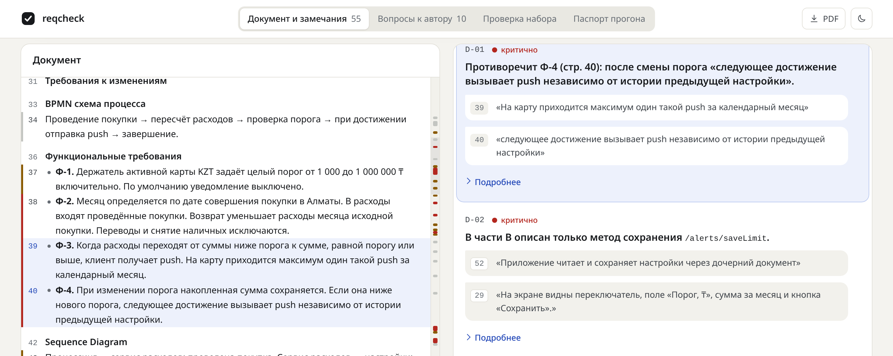

обходится дефект требований, если его нашли только на тестах (NASA, 2004).
Агент проверяет ТЗ до того, как по нему начнут писать код и тесты.
D-01, критично
Порядок задаёт код, а не автономные агенты: в исследованиях 2026 года команда агентов шумит сильнее и стоит в 2-30 раз дороже
Автоматическая сверка. При строгой проверке (каждое совпадение прочитал отдельный агент): 39, 36 и 34.
Клик по замечанию подсвечивает строки ТЗ, на которые оно ссылается.

Каждое число перепроверяется командой из RESULTS.md, без ключа.